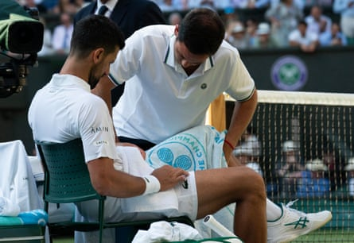

Novak Djokovic said he must accept the reality that his ageing body continues to make it extremely difficult for him to win another grand slam title after struggling physically in his emphatic defeat by the world No 1, Jannik Sinner , in the semi-finals of Wimbledon on Friday.
A month after suffering a straight sets defeat by Sinner in the semi-finals of the French Open , Djokovic was subjected to an even more one-sided 6-3, 6-3, 6-4 defeat by an imperious Sinner. The 38-year-old moved sluggishly throughout and he took a medical timeout after losing the second set.
“I don’t think it’s bad fortune,” said Djokovic. “It’s just age, the wear and tear of the body. As much as I’m taking care of it, the reality hits me right now, last year and a half, like never before, to be honest.
“It’s tough for me to accept that because I feel like when I’m fresh, when I’m fit, I can still play really good tennis. I’ve proven that this year. But playing best of five, particularly this year, has been a real struggle for me physically. The longer the tournament goes, the worse the condition gets. I reached the semis of every slam this year, but I have to play Sinner or [Carlos] Alcaraz. These guys are fit, young, sharp. I feel like I’m going into the match with the tank half empty. It’s just not possible to win a match like that.
“It is what it is, you know? It’s one of these things I accept and embrace in some way, deal with the reality the way it is, and try to make the most out of it, I guess.”
Novak Djokovic, who suffered a nasty fall in his quarter-final win, took a medical timeout after losing the second set against Jannik Sinner.Photograph: Fred Mullane/ISI Photos/Getty Images
Despite his struggles, Djokovic said he did not believe this would be his final appearance at Wimbledon and he intends to return next year. “Hopefully it’s not my last match on the Centre Court,” he said. “I’m not planning to finish my Wimbledon career today. So I’m planning to come back definitely at least one more time, play on the Centre Court for sure.”
For Sinner, the victory means that he has now reached the final of the past four grand slam tournaments. After his painful five-set defeat by Alcaraz in the French Open final , Sinner has responded extremely well and he will have a chance to make up for that defeat in the final on Sunday after Alcaraz defeated Taylor Fritz, the fifth seed, 6-4, 5-7, 6-3, 7-6 (6) .
By reaching the final, Sinner and Alcaraz have ensured that they have split the last seven grand slam titles between them. The gap between them and the rest of the field continues to grow.